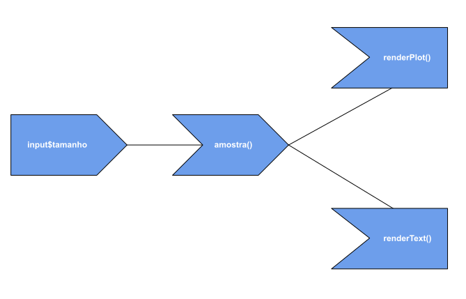
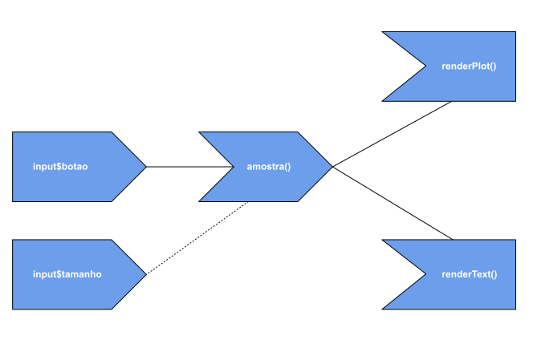
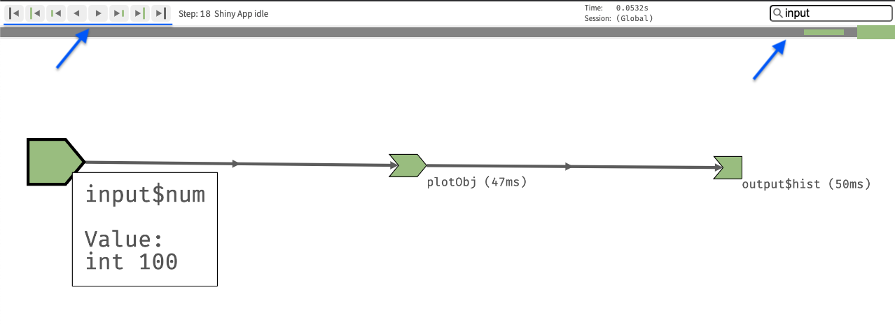

3 Reatividade: conceitos básicos
Imagine que gostaríamos de criar um app que gerasse um gráfico com o resultado do sorteio de uma amostra de números entre 1 e 10 e que o tamanho dessa amostra fosse definido por um input. Além disso, que esse app também indicasse em texto qual foi o número mais sorteado.
Pensando na construção desse app, teríamos um input, o tamanho da amostra, e dois outputs, um gráfico (de barras) indicando a frequência de cada número e um texto dizendo qual o número mais sorteado. Pelo que aprendemos no capítulo anterior, podemos usar um sliderInput() para receber o tamanho da amostra e as funções renderPlot() e renderText() para construir os textos. No entanto, uma dúvida emerge com relação ao sorteio da amostra: onde ele deve ser feito?
Obviamente, sortear a amostra durante a construção de cada output (como exemplifica o código abaixo) não vai funcionar pois geraríamos duas amostras diferentes1.
# Solução insuficiente, pois as amostras geradas serão diferentes
server <- function(input, output, session) {
output$grafico <- renderPlot({
amostra <- sample(1:10, input$tamanho, replace = TRUE)
amostra |>
table() |>
barplot()
})
output$resultado <- renderText({
amostra <- sample(1:10, input$tamanho, replace = TRUE)
contagem <- table(amostra)
mais_freq <- names(contagem[which.max(contagem)])
glue::glue("O valor mais sorteado foi o {mais_freq}.")
})
}A solução ingênua seria criar a amostra uma única vez, fora das funções render*(), mas isso retornará um erro. O que a mensagem de erro diz, de maneira mais direta, é que essa solução fere as regras de reatividade do Shiny.
# Solução incorreta, pois viola as regras de reatividade do Shiny.
server <- function(input, output, session) {
amostra <- sample(1:10, input$tamanho, replace = TRUE)
output$grafico <- renderPlot({
amostra |>
table() |>
barplot()
})
output$resultado <- renderText({
contagem <- table(amostra)
mais_freq <- names(contagem[which.max(contagem)])
glue::glue("O valor mais sorteado foi o {mais_freq}.")
})
}
#> Error in : Can't access reactive value 'tamanho' outside of reactive consumer.A construção desse app traz à tona a necessidade de uma nova peça do Shiny, que não mencionamos ainda. Sem ela não conseguiríamos criar esse app de maneira eficiente.
Antes de falar dela, no entanto, como podemos ver pela mensagem de erro da tentativa anterior, precisamos falar de um dos temas centrais do desenvolvimento de aplicativos Shiny: a reatividade.
Embora dê para fazer muita coisa no Shiny na tentativa e erro, entender a reatividade nos desvia de vários problemas explícitos — como o erro acima — e, principalmente, de problemas invisíveis — quando o app funciona, mas de maneira ineficiente ou incorreta. Economizamos muito tempo (e sanidade) não cometendo esses erros durante o desenvolvimento de um app e, por isso, vale a pena estudar reatividade desde o início da sua jornada pelo Shiny.
Na próxima seção, faremos uma breve introdução explicando o que é reatividade e por que ela é importante no Shiny. Em seguida, introduziremos o conceito de diagrama de reatividade e apresentaremos as suas estruturas básicas. Por fim, vamos conhecer o reactlog, uma ferramente muito útil para visualizar a reatividade de um aplicativo.
3.1 O que é reatividade?
Quando escrevemos código R, dois paradigmas estão sempre presentes:
podemos avaliar uma linha de código assim que a escrevermos; e
se decidirmos rodar todo o script de uma vez, as linhas de código serão avaliadas sequencialmente.
Isso faz nossas tarefas de análise de dados virarem scripts sequenciais, cujo código não pode ser executado fora de ordem.
O código abaixo, que executa a corriqueira tarefa de importar, manipular e visualizar uma base, mostra um exemplo disso. Construímos o código rodando linha a linha, para testar se estamos seguindo pelo caminho certo. Ao final, podemos rodar tudo de uma vez para obter o resultado desejado (o gráfico). Se o código for rodado fora de ordem, nada vai funcionar. Essa maneira de escrever e avaliar códigos é conhecida como programação imperativa.
tab_starwars <- dplyr::starwars
tab_grafico <- tab_starwars |>
tidyr::unnest(films) |>
tidyr::drop_na(species) |>
dplyr::group_by(films) |>
dplyr::summarise(total_especies = dplyr::n_distinct(species)) |>
dplyr::mutate(
films = forcats::fct_reorder(films, total_especies)
)
tab_grafico |>
ggplot2::ggplot(ggplot2::aes(y = films, x = total_especies)) +
ggplot2::geom_col() +
ggplot2::theme_minimal() +
ggplot2::labs(x = "Total de espécies", y = "Filme")A reatividade reside em um outro paradigma de programação, conhecido como programação declarativa. Nela, não construímos códigos que serão rodados interativamente ou sequencialmente, mas sim uma receita que especifica o que o computador deve fazer a depender da situação apresentada. Mais especificamente, a receita ensina ao computador qual código deve ser executado e quando.
No contexto do Shiny, essa receita é um conjunto de dependências que será utilizado para decidir quais outputs devem ser recalculados quando um input muda. Não somos nós que rodamos o código que gera um output, nós apenas definimos qual código será esse. O ambiente criado pelo Shiny a partir da nossa receita (quando um app está em funcionamento) é quem decide a hora certa de executar esse código (se é que ele será executado).
Todo esse processo, que envolve monitorar mudanças nos inputs para atualizar os outputs a partir de uma receita composta de códigos executados apenas quando necessário, é o que chamamos de reatividade. A melhor parte é que o Shiny cuida sozinho de quase tudo, cabendo a nós apenas especificar a receita de maneira adequada.
Na prática, essa receita nada mais é do que a função server(). São os códigos que escrevemos na função server() que determinam as dependências entre inputs e outputs. Chamaremos aqui o conjunto de dependências de um app de diagrama de reatividade.
Para ilustrar esses conceitos, considere o app gerado pelo código a seguir.
library(shiny)
variaveis <- names(mtcars)
ui <- fluidPage(
selectInput(
inputId = "variavel_A",
label = "Variável A",
choices = variaveis
),
plotOutput(outputId = "histograma_A"),
selectInput(
inputId = "variavel_B",
label = "Variável B",
choices = variaveis,
selected = variaveis[2],
),
plotOutput(outputId = "histograma_B")
)
server <- function(input, output, session) {
output$histograma_A <- renderPlot({
print("Gerando histograma A...")
hist(mtcars[[input$variavel_A]], main = "Histograma A")
})
output$histograma_B <- renderPlot({
print("Gerando histograma B...")
hist(mtcars[[input$variavel_B]], main = "Histograma B")
})
}
shinyApp(ui, server)
O diagrama de reatividade desse app, determinado pela função server(), pode ser representado pelo seguinte esquema:

O diagrama mostra que a reatividade desse aplicativo possui dois caminhos independentes, um começando com o input variavel_A e terminando no output histograma_A e o outro começando com o variavel_B e terminando no output histograma_B. A ausência de conexão entre o histograma_A e a variavel_B indica que, ao mudarmos a variavel_B, o histograma_A não será recalculado. A mesma ausência de conexão existe entre o histograma_B e a variavel_A.
A ligação direta de um único input com um único output é o esquema reativo mais simples que um app pode apresentar. Na prática, vamos precisar construir interações mais complexas entre inputs e outputs, o que ainda não é possível com as peças que temos disponíveis. Para isso, precisaremos de funções que manipulem o caminho da reatividade.
No restante deste capítulo, aprenderemos alguns conceitos e funções que nos permitirão ter um controle maior sobre a reatividade no Shiny. Não esgotaremos o assunto reatividade aqui, ele será retomado no Capítulo 7 e no [Capítulo -sec-reatividade3], mas já sairemos capazes de construir diversos tipos de interação entre inputs e outputs em nossos apps.
Começaremos aprendendo as estruturas básicas do diagrama de reatividade: valores reativos, observers e expressões reativas.
3.2 Valores reativos e funções observadoras
Para programar em Shiny, precisamos aprender um conjunto de conceitos e ferramentas. Até aqui, fizemos isso definindo como o Shiny funciona e explicando como utilizar o pacote shiny para criar nossos apps. Agora, além de explorar novas funções, adicionaremos à nossa lista de conceitos algumas regras importantes para que nossos apps funcionem corretamente.
Vimos na seção anterior que um aplicativo Shiny depende da especificação adequada do diagrama de reatividade. Isso quer dizer que devemos seguir alguns princípios na construção da função server para que o Shiny consiga montar esse diagrama e para que a reatividade aconteça.
O primeiro desses princípios é o seguinte: todo diagrama de reatividade deve começar com um valor reativo e terminar com uma função observadora. Nós já utilizamos valores reativos e funções observadoras antes. Vamos definir o que são estruturas.
Valores reativos são objetos que disparam a reatividade do app a partir de mudanças nos seus valores. Os objetos da input são o exemplo mais comum de valores reativos. Funções observadoras são funções que “observam” mudanças nos valores reativos e, quando elas acontecem, recalculam o seu código. As funções da famílias render*() são os exemplos mais comuns de funções observadoras.
Voltando app dado como exemplo na seção anterior, quando a “Variável A” é alterada na UI, o seguinte processo acontece:
o valor reativo
input$variavel_Aemite um sinal de alerta a todas as funções observadoras que dependem dele dizendo que seu valor mudou;a função observadora
renderPlot(), que depende deinput$variavel_A, ao saber que esse valor reativo está desatualizado, desatualiza o seu próprio resultado, isto é, o outputhistograma_A;a função
renderPlot()consulta o novo valor deinput$variavel_Ae o utiliza para recalcular seu resultado (o código dentro darenderPlot()é rodado novamente);o novo histograma é gerado e enviado para a UI, encerrando o processo reativo.
Esse processo, que podemos chamar de fluxo reativo, só é disparado por mudanças em valores reativos e só acontece quando o ponto final é uma função observadora.
Os valores da lista input não são o único tipo de valores reativos, assim como as funções render*() não são o único tipo de funções observadoras. Falaremos mais de outros valores reativos e observers no [Capítulo -sec-reatividade2].
3.3 Expressões reativas
Muitas vezes, precisamos criar objetos dentro do Shiny que dependem de valores reativos e que serão utilizados dentro de uma ou mais funções observadoras. Tal objeto precisaria se comportar tanto como uma função observadora, pois observaria o valor reativo do qual depende, quanto como uma valor reativo, para disparar a reatividade dentro das funções observadoras onde ele será usado.
Esses objetos existem e são chamados de expressões reativas, a peça faltante no problema apresentado na introdução deste capítulo. Para criar expressões reativas, utilizamos as funções reactive() e eventReactive().
3.3.1 A função reactive()
A função reactive() cria uma expressão reativa que observa todos os valores reativos presentes dentro de seu código. No exemplo a seguir, a expressão reativa amostra recalcula o seu valor sempre que o valor reativo input$tamanho mudar.
# server
amostra <- reactive({
sample(1:10, input$tamanho, replace = TRUE)
})Já neste próximo exemplo, a expressão reativa soma recalcula o seu valor sempre que qualquer um dos valores reativos input$valor1, input$valor2 e input$valor3 mudar.
soma <- reactive({
input$valor1 + input$valor2 + input$valor3
})Para acessar o valor de uma expressão reativa, devemos usar parênteses após o seu nome, como se estivéssemos chamando uma função sem argumentos. Podemos utilizar esse valor dentro de qualquer outra expressão reativa ou função observadora, quantas vezes for preciso.
No código a seguir, criamos a expressão reativa amostra e utilizamos o seu valor chamando amostra() dentro das funções observadoras renderPlot() e renderText(). Essa é a solução para o problema apresentado no início do capítulo.
# server
amostra <- reactive({
sample(1:10, input$tamanho, replace = TRUE)
})
output$grafico <- renderPlot({
amostra() |>
table() |>
barplot()
})
output$resultado <- renderText({
contagem <- table(amostra())
mais_freq <- names(contagem[which.max(contagem)])
glue::glue("O valor mais sorteado foi o {mais_freq}.")
})Nesse exemplo, se o valor de input$tamanho mudar o seguinte processo acontecerá internamente no Shiny:
o valor reativo
input$tamanhovai emitir um alerta avisando que seu valor está desatualizado;a expressão reativa
amostrareceberá esse alerta, desatualizará o próprio valor (a amostra sorteada) e também emitirá um alerta;tanto a função observadora
renderPlot()quanto arenderText()receberão o alerta da expressão reativaamostrae invalidarão os seus resultados (o gráfico e o texto);as funções observadoras consultarão o valor atualizado da expressão reativa amostra que, por sua vez, consultará o valor atualizado do valor reativo
input$tamanho;com o valor atualizado do
input$tamanho, a expressão reativaamostrarecalcula o seu valor (uma nova amostra é gerada) e, em seguida, as funções observadorasrenderPlot()erenderText()recalculam seus resultados (o gráfico e o texto são gerados novamente).
O diagrama reativo nesse caso pode ser representado pelo esquema a seguir:

3.3.2 A função eventReactive()
Enquanto a função reactive() observa mudanças em todos os valores reativos presentes em seu código, a função eventReactive() observa mudanças em apenas um valor reativo, especificado na chamada da própria função. No código a seguir, a soma só recalculada quando o valor input$valor1 mudar. Alterar os valores de input$valor2 ou input$valor3 não vai fazer a expressão reativa soma disparar reatividade.
soma <- eventReactive(input$valor1, {
input$valor1 + input$valor2 + input$valor3
})A eventReactive() é muito utilizada com botões, criados na UI com a função actionButton(). No app apresentado a seguir, a amostra só é gerada quando a pessoa usando o app clicar no botão “Gerar gráfico”. Rode o app e teste esse comportamento.
# ui
library(shiny)
ui <- fluidPage(
"Resultado do sorteio",
sliderInput(
inputId = "tamanho",
label = "Selecione o tamanho da amostra",
min = 1,
max = 1000,
value = 100
),
actionButton("botao", "Gerar gráfico"),
plotOutput(outputId = "grafico"),
textOutput(outputId = "resultado")
)
server <- function(input, output, session) {
amostra <- eventReactive(input$botao, {
sample(1:10, input$tamanho, replace = TRUE)
})
output$grafico <- renderPlot({
amostra() |>
table() |>
barplot()
})
output$resultado <- renderText({
contagem <- table(amostra())
mais_freq <- names(contagem[which.max(contagem)])
glue::glue("O valor mais sorteado foi o {mais_freq}.")
})
}
shinyApp(ui, server)Veja que o valor reativo input$botao, especificado no primeiro argumento da função eventReactive(), funciona como o gatilho do fluxo de reatividade. Isso significa que a expressão reativa amostra será recalculada apenas quando apertarmos o botão Gerar gráfico. Mudanças no slider não resultarão em qualquer mudança no app (estamos impedindo que input$tamanho inicie o fluxo de reatividade). Repare também que o código que gera a amostra é passado no segundo argumento da função eventReactive().
O diagrama reativo desse app pode ser representado pelo esquema a seguir. A linha pontilhada indica que o input$tamanho não dispara reatividade.

3.4 Contexto reativo
Vimos na introdução do capítulo que a nossa segunda tentativa — colocar a criação da amostra diretamente na função server — retorna um erro. Isso acontece porque valores e expressões reativas só podem ser lidas dentro de um contexto reativo. Essa é outra regra do Shiny, e precisamos segui-la para que ele consiga montar o diagrama de reatividade.
Contexto reativo remete a qualquer função que observe mudanças em valores reativos, como expressões reativas ou funções observadoras. Basicamente, o processo do Shiny que interpreta a função server e cria o diagrama de reatividade não sabe o que fazer quando valores e expressões reativas estão fora de contexto reativo. Então recebemos um erro.
No exemplo abaixo, a função renderPlot() cria um contexto reativo e, por isso, podemos utilizar o valor reativo input$variavel dentro dela.
server <- function(input, output, session) {
output$hist <- renderPlot({
hist(input$variavel))
})
}Sempre que tentamos usar um valor ou expressão reativa fora de um contexto reativo, o Shiny retornará o erro a seguir.
server <- function(input, output, session) {
output$hist <- hist(input$variavel))
}
#> Error : Can't access reactive value 'variavel' outside of
# reactive consumer.3.5 Visualizando o diagrama de reatividade: reactlog
A construção adequada do diagrama de dependências reativas costuma ser o maior desafio no desenvolvimento de aplicativos Shiny. Quanto mais engrenagens precisam girar juntas dentro de um app, mais complicada pode ser a lógica de programação para que a reatividade funcione de maneira correta.
Se, ao mudar o valor de um slider, esperamos que um gráfico seja atualizado, dois problemas podem surgir: (1) o gráfico não ser recalculado e (2) o gráfico ser recalculado mais de uma vez.
Os dois problemas indicam um diagrama de reatividade mal construído. A diferença é que, enquanto no primeiro caso o app não funciona, no segundo, ignorando-se o comportamento estranho, ele entrega o que se espera dele.
Um app que aparentemente funciona do jeito que gostaríamos pode esconder problemas de reatividade que o deixam mais lento ou com comportamentos estranhos, atrapalhando a experiência na hora do uso.
Para evitar esses problemas, que discutiremos com mais detalhes no Capítulo 7 e no [Capítulo -sec-reatividade3], podemos imaginar ou desenhar o diagrama de reatividade para investigar onde está a falha. Essa é uma tarefa simples em apps com poucos inputs e outputs, mas extremamente difícil ou inviável em apps complexos.
Nesses casos (ou mesmo nos casos simples), podemos utilizar o pacote reactlog. Com ele, conseguimos visualizar facilmente o diagrama de dependências reativas de qualquer Shiny app e olhar o que acontece por trás das cortinas da reatividade quando executamos o aplicativo.
Antes de mais nada, instale o pacote reactlog.
install.packages("reactlog")Em seguida, no Console, rode o código abaixo. Isso vai habilitar o reactlog para qualquer app que você rodar na atual sessão de R.
options(shiny.reactlog = TRUE) Por fim, rode o seu app e utilize o comando CTRL + F3 (no Mac, command + F3). O seu navegador abrirá uma nova aba com o diagrama de reatividade.
No exemplo a seguir, temos a UI de um aplicativo que gera o histograma de uma amostra com distribuição normal. O tamanho da amostra é determinado pelo sliderInput. Sempre que o tamanho da amostra muda, o gráfico é recalculado.

Veja agora o diagrama de reatividade associado a esse app. A forma dos 4 elementos mais a esquerda representa valores reativos, a forma do elemento plotObj representa expressões reativas e a forma do elemento output$hist representa funções observadoras.

Parece muito mais complicado do que deveria, né? Acontece que além do input e output, o diagrama também apresenta elementos referentes ao tamanho da janela do navegador que está acessando o app. Esses elementos influenciam na imagem produzida para o gráfico dentro do HTML, que é redimensionada a depender do tamanho da tela. Por isso a existência do elemento intermediário plotObj, que guarda as instruções para gerar o gráfico criadas pelo código R. Assim, o código R no servidor não precisa ser rodado novamente para que a imagem do gráfico seja redimensionada.
Podemos filtrar o diagrama para mostrar apenas o fluxo relacionado aos inputs do aplicativo escrevendo input no campo de busca no canto superior direito. Repare também que os controles no canto superior esquerdo permitem visualizar o fluxo de reatividade das ações realizadas entre a inicialização do app e o momento em que criamos o diagrama (quando pressionamos CTRL + F3).

Em resumo, com um diagrama de reatividade em mãos, podemos:
ver os inputs dos quais cada output depende e não depende;
investigar por que o código de um output não é rodado ou roda duas vezes quando acionamos um input do qual ele deveria depender;
ter uma visão menos abstrata do fluxo de reatividade e entender melhor o que acontece quando executamos cada parte do nosso app.
Utilize o código a seguir para reproduzir o app mostrado nesta seção. Mexa algumas vezes no slider e gere o diagrama de reatividade. Use os controles de navegação para visualizar cada etapa do ciclo reativo.
library(shiny)
ui <- fluidPage(
"Histograma da distribuição normal",
sliderInput(
inputId = "num",
label = "Selecione o tamanho da amostra",
min = 1,
max = 1000,
value = 100
),
plotOutput(outputId = "hist")
)
server <- function(input, output, session) {
output$hist <- renderPlot({
amostra <- rnorm(input$num)
hist(amostra)
})
}
shinyApp(ui, server)Como descrito na documentação da ferramenta, por razões de segurança e performance, nunca habilite o reactlog em ambientes de produção. Quando ele está habilitado, qualquer pessoal utilizando o seu app pode ver pelo menos parte do seu código fonte (que eventualmente pode conter informações sensíveis).
Você pode aprender mais sobre o funcionamento do reactlog clicando aqui.
Na sequência deste livro, sugerimos utilizar o reactlog sempre que ficar com dúvida sobre o diagrama de reatividade de um app.
3.6 Exercícios
1 - Qual a diferença entre programação imperativa e programação declarativa?
2 - O que é reatividade?
3 - Qual o papel da função server no contexto da reatividade de um aplicativo Shiny?
4 - O que são valores reativos? E funções observadoras?
5 - Para que servem as expressões reativas?
6 - Qual a diferença entre as funções reactive() e eventReactive()?
7 - Selecione a opção verdadeira.
Sempre que mudarmos o valor de um
inputna UI de um app, todo o código na funçãoserverserá rodado novamente.Expressões reativas são o ponto de partida do diagrama de reatividade.
Podemos criar valores reativos com a função
reactive().As funções da família
render*são um exemplo de função observadora.
8 - Faça um shiny app para visualizarmos boxplots da base ggplot2::diamonds.
O seu app deve ter dois inputs e um output:
o primeiro input deve ser uma caixa de seleção das variáveis numéricas da base (será o eixo y do gráfico).
o segundo input deve ser uma caixa de seleção das variáveis categóricas da base (será o eixo x do gráfico).
o output deve ser um gráfico com os boxplots da variável escolhida em (1) para cada categoria da variável escolhida em (2).
Para acessar a base diamonds, carregue o pacote ggplot2:
library(ggplto2)
diamonds
# ou rode
ggplot2::diamonds9 - Selecionando várias opções em um selectInput.
Reproduza o seguinte Shiny app: https://cursodashboards.shinyapps.io/select-multiple/
Troque o selectInput pelo checkboxGroupInput().
Para acessar a base utilizada, rode o código abaixo:
install.packages("nycflights13")
nycflights13::flights
# Pacote com versão em português da base
install.packages("dados")
dados::voos10 - Faça um Shiny app para explorar a base de filmes da Pixar.
# Instale o pacote com a versão original da base (em inglês)
install.packages("pixarfilms")
# Instale pacote com versão em português da base
install.packages("dados")Sugestões:
Input: data de lançamento (
dateRangeInput). Output: tabela de filmes.Input: filme. Outputs: orçamento, bilheteria, gênero, prêmios e notas.
Input: caixa de texto para escrever um nome. Outputs: tabela com filmes que essa pessoa participou e qual papel ela exerceu no filme (direção, roteiro, produção etc)
Dica: você precisará fazer join das bases do pacote para juntar as informações.
Claro que poderíamos usar a função
set.seed()para garantir que as amostras fossem as mesmas, mas imagine que não queremos escolher uma semente para a geração dos dados ou que, em algum outro contexto, o processo de amostragem fosse demorado e não queremos fazê-lo duas vezes.↩︎